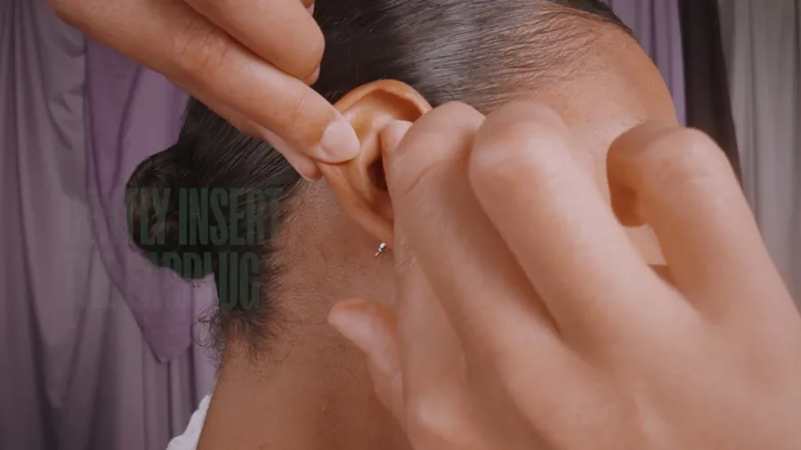
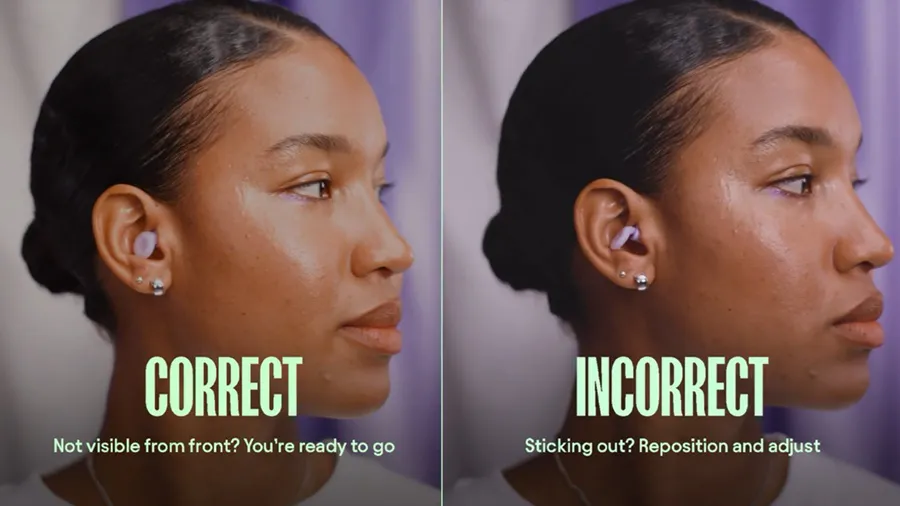

Somnus fit guide
How to wear Somnus Sleep Earplugs
Start with the size M tips already fitted. Pull your ear back, insert gently with no twist, then press for 5 seconds. Too loose? Go up a size. Too tight? Go down a size.
How to wear Somnus
Takes about a minute the first time. Each ear can need a different size.
-

Pick your tip
Size M comes fitted. Use it, or swap to the size the tip-size finder suggests. Each ear can take a different size.
-

Open your ear
Hold the earplug with the tip facing you, then pull the back of your ear to open the ear canal.
-

Insert gently
Slide the tip into your ear. Unlike foam plugs, there is no need to roll or twist it.
-

Press for 5 seconds
Press gently on the earplug for 5 seconds to create the seal. Do not push it in too deep.
-

Check the seal
Move your jaw from side to side. If it stays put and your own voice sounds louder, you are sealed. Sticking out? Reposition it or go down a size.
Tip-size finder
Answer three quick questions for a starting size. All 4 sizes (XS, S, M, L) come in the box in both tip types, so you can change your mind.
Rule of thumb
- Feel loose or fall out? Try a larger size. Too tight or sticking out? Go down a size.
- One ear feels different? Use a different size in each ear.
- Foam-Silicone tip for the softest feel; Double Tip for a firmer seal.
- Still not fitting after 3 nights? Contact us for fit help.
Taking them out
The flat ends sit close to your ear, so ease them out instead of pulling.
-
Grip the loop
Hold the loop between your thumb and finger.
-
Twist to break the seal
Twist it gently back and forth to let air in.
-
Ease it out slowly
Draw it out slowly. Never yank: that can pull the tip off or hurt.
Neighbour noise and cannot sleep? What 27 dB does in an HDB flat
Somnus Sleep Earplugs turn most flat noise down to a murmur, but they do not silence it. Soft sounds mostly disappear, medium sounds turn faint, and loud sounds stay audible at a much lower volume.
| Noise source | Measured in the bedroom | With Somnus (estimate) |
|---|---|---|
| Neighbour's TV through the wall | 46 dB | About 19 dB |
| Corridor chatter | 54 dB | About 27 dB |
| Traffic or MRT outside the window | 61 dB | About 34 dB |
| Partner snoring next to you | 68 dB | About 41 dB |
| Renovation drilling next door | 84 dB | About 57 dB |
Measured by the Somnus team with a phone sound meter in a 4-room HDB flat in Toa Payoh. Estimates subtract the 27 dB SNR rating, so your result will vary with fit.
- Your alarm should still get through, but test it on your first night to be sure.
- Sirens, barking dogs and fireworks stay audible at a much lower volume.
- Loud snoring can reach 100 dB, so it stays noticeable, but much less intense.
Give it 3 nights
Something new in your ear feels odd at first. Ease in before you decide.
-
Night 1
Wear them for 20 minutes while you read in bed, then sleep in them.
-
Night 2
Sore on one side? Drop that ear one size. Leaky? Go one size up or change the angle.
-
Night 3
Still not right? Swap tip type, then ask us. Shopee Mall's free 15-day returns cover you while you try.
Care & cleaning
Reusable means a quick clean, not a new pair every night.
-
Take the tips off
Gently remove the ear tips from the earplug body before you clean them.
-
Wipe, don't soak
Wipe the body and tips with a damp cloth. Never submerge the tips, and avoid harsh chemicals and sharp objects.
-
Dry fully
Let everything air-dry completely before you reattach the tips. This matters more in humid weather.
-
Store in the case
Keep them in the bedside case, and don't share earplugs, even with your partner.
Replacing tips
Replace your ear tips after about 100 nights, because memory foam slowly loses its shape. Change them sooner if:
- the foam no longer springs back after you squeeze it
- the silicone tears or starts to separate from the foam
- the seal you used to get is gone, even at the same size
Silicone folded over the tip? That is not damage. Unroll it and roll it back over the foam. For new tips, contact us or see current offers.
Haven't got a pair yet?
S$64.95, with all 4 tip sizes in both tip types in the box.
See Somnus Sleep Earplugs